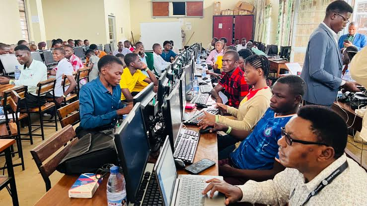
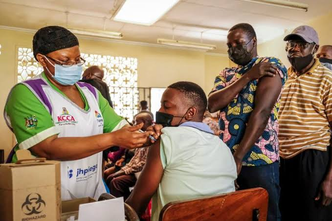

Welcome to Our Centre
The Community Learning & Health Centre provides learning opportunities, practical skills development and basic community health services in one accessible environment.
Our aim is to support children, young people, families and community members through quality education, health information and accessible services.
Learn more about public health information from the World Health Organization.
Education and Teaching
Our education section provides learning support for students and community members who want to improve their knowledge and practical skills.
Our Learning Areas
- Computer Studies
- Mathematics
- English Language
- Science
- Entrepreneurship
Learning Programmes
- Academic Support
- Primary Education Support
- Secondary Education Support
- Examination Preparation
- Skills Development
- Computer Literacy
- Digital Skills
- Entrepreneurship
How to Register for a Programme
- Choose a programme.
- Visit the centre or contact the administration office.
- Complete the registration form.
- Receive confirmation of your learning schedule.
Learning Environment

Our learning environment encourages participation, collaboration and practical learning activities.
Students can also explore UNICEF education resources for additional learning information.
Community Health and Medicine Delivery
The health section supports community members with basic health information, health education, referrals and selected community medicine-delivery services.
Our Health Services
- Health education and awareness
- Basic health screening
- Maternal and child health information
- Medicine collection and delivery support
- Referral guidance
- Community health outreach
Medicine Delivery Process
- Contact the health services desk.
- Provide the required patient and prescription information.
- Health staff verify the medicine request.
- The medicine is prepared by the authorised provider.
- The medicine is delivered or collected according to the agreed arrangement.
Important: Medicine should only be supplied or used according to appropriate professional guidance and a valid prescription where required.
Health Outreach

Community outreach activities provide health information and help community members understand available services and referral pathways.
For additional health information, visit the WHO Health Topics.
Education Programme Table
| Programme | Duration | Target Group | Delivery |
|---|---|---|---|
| Computer Literacy | 8 Weeks | Youth and Adults | Practical Classes |
| Mathematics Support | 12 Weeks | Secondary Students | Classroom |
| Digital Skills | 6 Weeks | Youth and Teachers | Practical Classes |
| Entrepreneurship | 8 Weeks | Young Adults | Blended Learning |
Health Services Table
| Service | Purpose | Availability |
|---|---|---|
| Health Education | Provide community health information | Monday - Friday |
| Basic Screening | Initial health checks | Selected Days |
| Medicine Delivery Support | Support authorised medicine collection or delivery | By Arrangement |
| Referral Guidance | Connect clients with appropriate health facilities | Monday - Friday |
Weekly Centre Schedule
| Day | Morning | Afternoon |
|---|---|---|
| Monday | Computer Studies | Health Education |
| Tuesday | Mathematics Support | Basic Health Screening |
| Wednesday | Digital Skills | Medicine Delivery Support |
| Thursday | Science | Community Outreach |
| Friday | Entrepreneurship | Referral and Support Services |
Useful Links
Have a question? Email the Centre
Contact Us
Community Learning & Health Centre
Kampala, Uganda
Telephone: +256 700 000 000